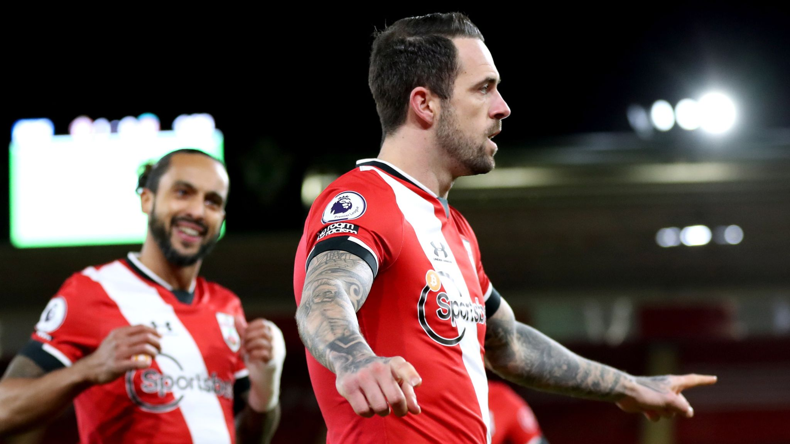
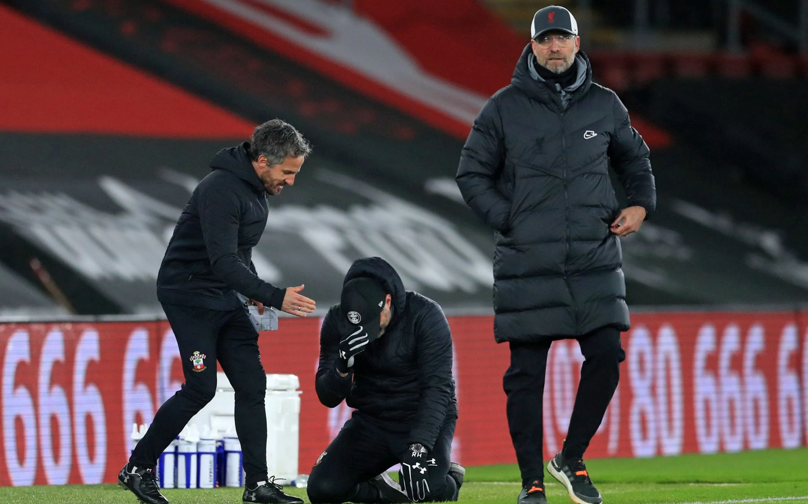

Final Score: Southampton 1-0 Liverpool
Southampton played host to league leaders Liverpool in the lone Premier League match on Monday night. An early goal from Danny Ings was enough to separate the two sides, who now both sit in the top six of the league table. Here are five key takeaways:
1. Southampton Show Their Muscle in the Box
After taking an early lead off a brilliant set-piece, Southampton had to defend against the always threatening Liverpool attack for most of the 90 minutes. Although they struggled to dominate possession in the midfield and allowed many balls to be played into the final third, the Saints were incredibly strong in the box, making smart tackles and throwing their bodies at the ball whenever possible. Considering how many shots they attempted and how much of the ball they had, Liverpool should have found an equalizer, but Southampton’s back-line put itself in great positions and earned the clean sheet. It’s not a flashy style of play, but the team committed to its defensive strategy and deserved all three points. To beat the best you have to be the best, and Southampton were at their best on Monday night.

2. Thiago Off the Pace
Coming to the Premier League from Bayern Munich, Thiago was one of the biggest signings of the summer. His role in the Liverpool side has been limited due to injuries and a positive COVID test early in the season, but the midfielder made his first start in the league since October against Southampton. From the opening whistle, the Spaniard looked out of place in the Liverpool 11: giving up the free-kick that led to Ings’s opener, receiving a yellow card in the third minute, and uncharacteristically losing possession throughout the match. Thiago’s inclusion in the starting lineup made sense following his appearance as a substitute in Liverpool’s last match against Newcastle, but he did little to affirm that he currently belongs in Jürgen Klopp’s team. Nobody doubts Thiago’s talent, but it may have made more sense to keep him on the bench on Monday night and then start him in the FA Cup tie with Aston Villa this Friday as he tries to get back to full fitness. Thiago will surely be a big part of this team moving forward, but his fitness must be a top priority for Klopp and the rest of the Liverpool staff.
3. Hasenhüttl’s Plan Works to Perfection
Ralph Hasenhüttl continues to make his case to be Premier League Manager of the Season. He orchestrated his most impressive victory to date on Monday night as he finally claimed points off of Jürgen Klopp and Liverpool. Southampton were rampant in the opening minutes of the match, scoring off a set-piece and pressing high up the pitch to create good chances. The side was committed to holding a slim lead and held back for most of the second half, but still threatened the Liverpool back-line and almost managed to increase the lead. Even after Moussa Djenepo’s early exit due to injury, the team held its shape and didn’t miss a beat. Despite Liverpool’s recent run of form and injury problems, it is always hard to defeat Klopp’s Reds in the Premier League. Hassenhüttl’s players have bought into his style of play and are having their best season in recent memory. The manager was in tears of joy after the final whistle as his far-fetched dream of making Southampton a formidable contender is coming to fruition. Even if the club falls back to reality next year, Saints fans are incredibly lucky to have a manager who is committed to excellence.

4. Liverpool Need a Center-Back
On paper, one might think that Liverpool’s defense is totally fine after Monday night’s performance. The Reds did give up a goal but dominated possession and had the lion’s share of scoring opportunities. However, starting two center-midfielders as center-backs will not work for Liverpool if they hope to win this year’s Premier League title. In the absence of Virgil van Dijk, Joe Gomez, and Joël Matip, Klopp turned to his captain Jordan Henderson and Fabinho to lead the back-line, and every phase of Liverpool’s team was negatively affected by the decision. The team was expectedly shaky defensively and susceptible to counter-attacks due to the inexperience of the central defenders, but the midfield was also less dominant than normal as Henderson and Fabinho had to play in the deeper positions. In the final third, Liverpool lacked tall and strong targets in the box and didn’t look threatening from crosses and corners. Given the long-term nature of his center-backs’ injuries, Klopp must bring in a temporary replacement via loan or transfer during the window. If he does not, Liverpool’s reign as champions of England will almost certainly last just one year.
5. Title and European Races Get More Interesting
Monday’s result has huge implications on the title and European races. Domestically, Liverpool remain top of the league on goal differential, but second-place Manchester United have a game in hand and are in tremendous form. On top of that, Manchester City have two games in hand on the leaders and seem to have hit their stride following a dominant performance against Chelsea over the weekend. These three clubs appear to be the only true title challengers, but it now seems that they will jockey for position over the coming months as opposed to most people’s initial belief that Liverpool would run away with the title. Depending on which clubs win the League Cup and FA Cup, the teams that finish in the sixth and seventh positions in the Premier League may qualify for next year’s Europa League. Although a club like Southampton is unlikely to qualify for the Champions League, next year’s Europa League is certainly within reach. Other clubs like Everton and Aston Villa are also having surprisingly strong seasons, making this year’s race for Europe more intriguing than ever. Fans are still waiting to see which club will emerge as the Premier League’s fourth Champions League qualifier for next season, but the race to play in Europe’s second-biggest continent-wide competition will be very intriguing as the season continues.